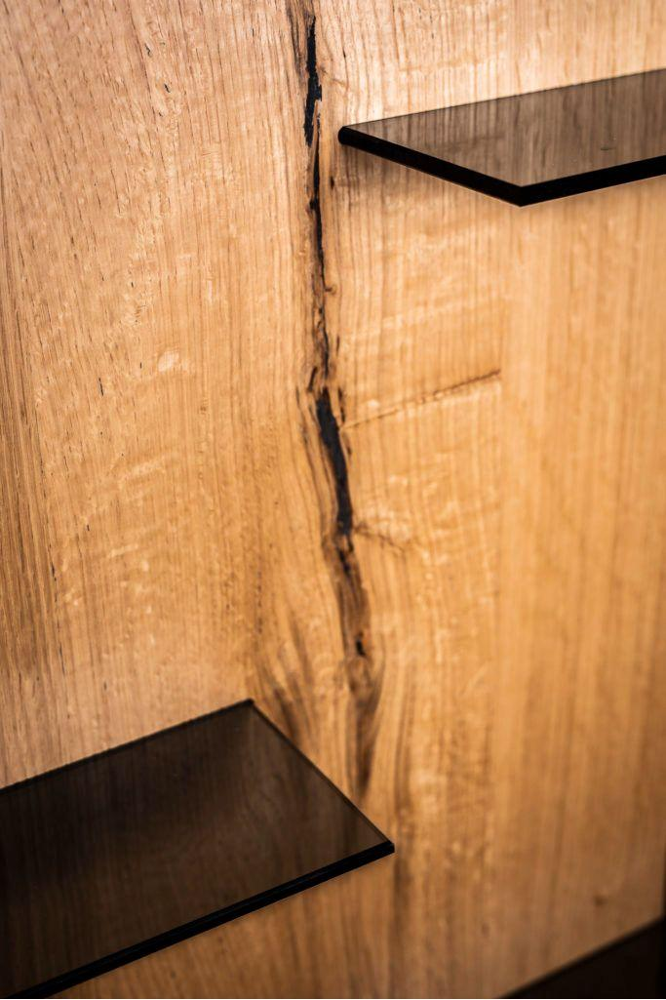

Büroeinrichtung · Wien
Johnson & Johnson
Für den österreichischen Standort in Wien haben wir die Büroräume eingerichtet – mit Möbeln im Stil des Firmenlogos.
[Jahr]
[Bildnachweis / Fotograf bestätigen]
Projekte
Büros, Empfangsbereiche und eine Wohnung – von Wien bis Graz. Tippen Sie auf ein Projekt, um hinzuspringen – die Fotos darunter öffnen sich groß.
Büroeinrichtung · Wien
Für den österreichischen Standort in Wien haben wir die Büroräume eingerichtet – mit Möbeln im Stil des Firmenlogos.
[Jahr]
[Bildnachweis / Fotograf bestätigen]
Büroeinrichtung · Wien
Im Wiener Büro des Technologiekonzerns sorgen unsere Möbel für eine angenehme Stimmung – mit Farbakzenten.
[Jahr]
[Bildnachweis / Fotograf bestätigen]
Empfangshalle · [Ort]
Für den Mobilfunkanbieter Drei haben wir eine Empfangshalle möbliert.
[Jahr]
[Fotos: © Markus Korbelik – laut Wasserzeichen, bestätigen]
Bürogebäude · [Ort]
Das Bürogebäude von Waagner Biro haben wir eingerichtet: klassisches Schwarz-Weiß, kombiniert mit Rot als Akzentfarbe.
[Jahr]
[Fotos: © Markus Korbelik – laut Wasserzeichen, bestätigen]
Rechtsanwaltskanzlei · Wien
Für eine Rechtsanwaltskanzlei mit Sitz in Wien haben wir die Kanzleiräume eingerichtet.
[Jahr]
[Bildnachweis / Fotograf bestätigen]
Einrichtung · Graz
Im Talentcenter in Graz finden junge Menschen der 7. und 8. Schulstufe ihre Talente. Wir haben die Räume eingerichtet – modern, jung und bunt.
[Jahr]
[Bildnachweis / Fotograf bestätigen]
Büroeinrichtung · [Ort]
Ein Projekt, das sich durch seine schlichte Eleganz auszeichnet.
[Projektname bestätigen: Auf der alten Seite heißt das Projekt „Hertha Turnaus“, die Bilddateien heißen „Hertha Hurnaus“ – Hertha Hurnaus ist eine Wiener Architekturfotografin, der Name ist also vermutlich der Bildnachweis, nicht der Kunde]
[Jahr]
[Bildnachweis / Fotograf bestätigen]
Wohnungseinrichtung · Wien, 2. Bezirk
Diese moderne Wohnung im 2. Bezirk, der Leopoldstadt, haben wir komplett eingerichtet.
[Jahr]
Fotos: © Lukas Schaller
Projekte, Texte und Fotos von der bestehenden Website der Tischlerei Gruber · [Freigabe der Kundennamen und Nutzungsrechte an den Fotos bei der Firma klären]
Schicken Sie uns Ihre Unterlagen oder ein paar Fotos vom Raum.
Projekt anfragen